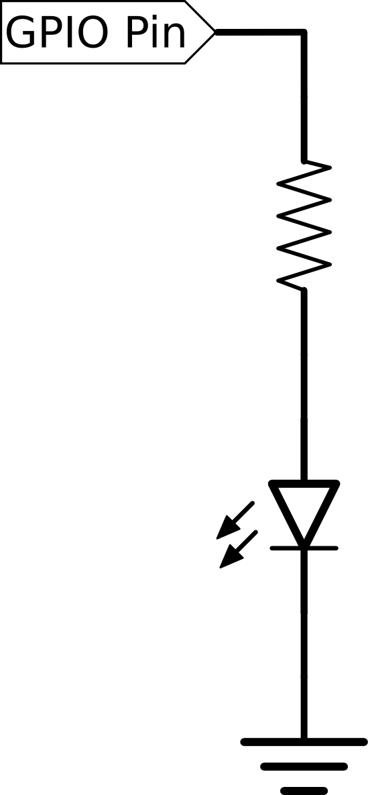

Lesson Plans
TBD: About this section.Getting Started: What is a Computer?
| Description | Introduction to computers – including the concepts of |
| Materials | RaspberrySTEM Base and Raspberry Pi Screwdriver Old discarded electronics |
| Prerequisites | None |
What is a computer?
- Electronic machine good (fast and reliable) at doing arithmetic
- Runs programs - sequence of steps
- Essential parts of a computer (with analogy to people)
-
- Processor – Brain's Processing capability
- Memory – Brain's memory
- Input/Output (I/O) –
-
- Inputs: 5 base senses & more
- Outputs: movement, speech
How fast is a computer? How long would it take you to
count to 10 billion:
- Estimate how long it would take to count to 10 billion, counting 10 hours a day
- Compute time to count to 10 billion: (10 billion / Count) / 60 / 10 / 365 = years
- Comparison: Desktop PC takes ~ 1 second (assumes multiple cores running at several GHz).
Different types of computers
- PCs (Macs, Windows, etc), both desktops and laptops
- Embedded computers: processors embedded within other devices that have a dedicated function.
- Processors are a kind of Integrated Circuit (IC) (chip)
- Combined with memory ICs, other ICs, and discrete components
- Soldered onto a PCB that connects the components
Examine real electronics
- Pass around electronics circuit boards
- Guess where the microprocessor is
- Notice the traces (wires) that connect all the components together
Comparing the numbers:
- Mac: ~ 100 million
- Windows PC: ~ 1 billion
- Embedded: ~ 100 billion
- “Gartner Says More than 1 Billion PCs In Use Worldwide and Headed to 2 Billion Units by 2014” (http://www.gartner.com/newsroom/id/703807)
- Apple at 10.6% U.S. market share in 2Q14 (http://www.gartner.com/newsroom/id/2793921)
- In 2013, embedded processors shipped ~ 20 billion, compared to ~ 300 million PCs:
-
- http://www.electronicsweekly.com/news/components/arm-to-take-68-of-embedded-processor-market-2013-02/
- http://ir.arm.com/phoenix.zhtml?c=197211&p=irol-reportsannual
- http://www.gartner.com/newsroom/id/2647517
Count how many Mac & PCs you have at home. How many
other devices at home have embedded microprocessors?
- Q: What is the Raspberry Pi? A: Single Board Computer, Low Cost, Runs Linux OS
- Identify: Processor, Memory, I/Os
-
- Memory chip is on top of the processor in the center of the board
- I/Os
- What is the RaspberrySTEM?
- What is the RaspberrySTEM IDE?
Assemble the RaspberrySTEM Base
- Take care handling your electronics
- Assemble RaspberrySTEM Base bottom and sides with nuts & bolts
- Attach the Raspberry Pi to the RaspberrySTEM Base with nuts & bolts and acrylic bushings
- Plug in all cables (monitor, keyboard, mouse, power) and SD card
- Boot to RaspberrySTEM IDE, run first one-liner
program:
print('hello')
Introduction to the RaspberrySTEM
| Description | Introduction to electronics: |
| Materials | RaspberrySTEM Base with Raspberry Pi RaspberrySTEM CREATOR Lid LED RaspberrySTEM Cell Buttons RaspberrySTEM Cell CR2032 3V Lithium Coin Cell Battery |
| Prerequisites | Introduction to the RaspberrySTEM |
Q: What is electricity?
A: Flow of charged particles (in this curriculum, we are generally concerned with the flow of electrons through a conductor (a metal, usually copper)).
A: Flow of charged particles (in this curriculum, we are generally concerned with the flow of electrons through a conductor (a metal, usually copper)).
Introduction to Electronics: The Basics
| Description | Introduction to electronics: Learn about the concepts of electricity, voltage and current through the water analogy Hook up a simple circuit using a solderless breadboard that lights up an LED |
| Materials | RaspberrySTEM Base with Raspberry Pi RaspberrySTEM CREATOR Lid LED RaspberrySTEM Cell Buttons RaspberrySTEM Cell CR2032 3V Lithium Coin Cell Battery |
| Prerequisites | Introduction to the RaspberrySTEM |
What is electricity?
- Flow of charged particles (in this curriculum, we are generally concerned with the flow of electrons through a conductor (a metal, usually copper)).
- Water analogy – Flow of water through a completely filled pipe is highly similar (in intuitive basis and in equations) for many of the electrical concepts. Many electronics components can be modeled with analogous water based structures that are intuitively easy to understand. A brief list of concepts about electricity in a wire can be explained by analogy to water in a pipe:
| Electricity | Water |
| Current – flow of electrons | Current – flow of water molecules |
| Voltage | Pressure |
| Resistance | Constriction |
| Battery or Voltage Source | Pump |
- Ubiquity – electricity is everywhere, and used to power all of our modern devices: to heat our homes, run electronics, and turn motors.
- What is a Circuit?
- Definition: A loop (of wire) that conducts electricity
- Simplest circuit: power source (e.g. battery) connected to a load (e.g. light bulb).
- Saftey
Demonstration: LED throwie (with resistor) – one of
the simplest circuits
- Build the circuit as shown, using your hands. This can be done by pinching one lead of the the resistor and one lead of the LED around the battery with the left hand, and pinch the remaining LED and resistor leads together with the right hand.
- Note: Current will only flow through the LED in one direction, therefore you must connect it up correctly (no harm done if you don't, but it won't work). The cathode of the LED (has the shorter lead, and has a flat side) should be connected to the negative side of the battery.
- Note: An LED throwie can be made without the resistor, however it is considered bad practice to do so as it either it can possibly damage either the battery or LED (the resistor is used to limit the current through the circuit to a reasonable level). But, as the LED throwies are often only temporarily, they are often made without the resistor. In this exercise, though, it makes sense to teach the proper way to connect up an LED.
How Does a Breadboard Work?
- Contains metal clips inside that make it easy to connect wires together.
- Has power rows marked in blue and red on the top and bottom edges.
- All other holes are connected together as columns of 5.
Assemble the RaspberrySTEM CREATOR Lid
- Attach the Connector PCB to to the Lid with two nuts and bolts. The bolts should be pointed upwards.
- Attach the CREATOR Lid to the Raspberry Pi with the ribbon cable.
- Snap the Lid onto the RaspberrySTEM Base.
- Connect the 3.3V power and ground (GND) from the CREATOR Lid Connector to the breadboard power rails. The 3.3V should be hooked up to the positive “+” (red) rail, and the GND should be hooked up to the negative “-” (blue) rail.
- Build the circuit as shown in the previous example, in two steps:
-
- First, plug the resistor/LED connection into a single 5-pin column of the breadboard (previously held with the right hand). Continue to hold the left hand with the battery. The LED should light up.
- Second, remove the battery and instead hook the leads that were connected to the battery to the positive and negative. The LED should light up.
Lighting LEDs with GPIOs
| Description | LEDs and GPIOs Connect individual LEDs to several GPIOs in order to control them using a program. Learn how to use a loop to repeat a section of code multiple times |
| Materials | RaspberrySTEM CREATOR kit with Raspberry Pi LEDs RaspberrySTEM Cell |
| Prerequisites | None |
What is a GPIO?
- General Purpose Input/Output.
- A method for a computer to get or set the voltage (to high (3.3V) or low (0V, i.e. Ground) on a pin. Great for turning LEDS on/off, enabling devices (like other ICs, motors, relays, etc), or reading the state of sensors, buttons, switches, etc.
- GPIO pin numbers are labelled on the RaspberrySTEM Lid Connector.
Hook up and light an LED
- Choose any GPIO pin on the RaspberrySTEM Lid Connector. The GPIO Pin numbers are written as the first number next to each pin (not all pins are GPIO pins).
- Connect up the circuit as shown. GPIO 14 is used in this example, but any other GPIO could be used as well.


- Run the following program. The first two lines initialize the GPIO software. The setup() function makes the selected GPIO pin an output pin. The final line is the critical line - it turns the GPIO on (and the LED will go on as a result).
import RPi.GPIO as GPIO GPIO.setmode(GPIO.BCM) pin = 14 GPIO.setup(pin, GPIO.OUT) GPIO.output(pin, True)
- In the output() function, modify the parameter True to False. Rerun the program - this will turn the GPIO off, which turns the LED off.
Functions
- Functions are a named section of a program.
- Functions a grouped together in collections called libraries.
- Functions are passed a list of parameters that change how the function works.
- The sleep function, that is part of the time
library, pauses for the amount of time given. It is
called with
time.sleep(seconds).
- Use the time.sleep() function to flash an LED. The sleep function pauses the program for the amount seconds you give it as a parameter.
- To use the sleep function, you'll need to add the following line to the top of your program:
import time
- As an example, to sleep for two seconds, run:
time.sleep(2)
- Change the previous program: Turn the LED ON, sleep for one second, turn the LED OFF, sleep for one second
- Repeat the above multiple times, and the LED with flash.
- The sleep function accepts fractional values as well - to sleep for half a second, you can use:
time.sleep(0.5)
- Decrease the amount of time to have the LED flash faster.
Simple loops:
- Loops are used to run a section of code for a specific number of times.
- All code that is part of the loop must be indented to the same level
Loops allow a program to run the same section of code
multiple times. The simplest loop is a
for
loop that runs a specific number of times.
- Open a new file.
- To print the word 'hello' five times, you can use:
for i in range(5):
print('hello')
- The variable i in the above loop increases by one each time the loop is run, starting at 0. To see the value of i each loop, print it.
- Finally, flash the LED 10 times by adding a for loop to the previous program.
Two LED Siren
- Add another LED/resistor to a different GPIO, as was done in the first activity.
- setup() your new LED, and use output() to turn it on, as was done in the first activity.
- Write a program to flash each LED, in an alternating fashion - when one LED is on, turn the other LED off. Flash the LED 10 times.
Four LED sweep
- Add two more LEDs as done above for a total of four. Place them in a line.
- In a loop, light each LED one at a time.
- Back and forth: instead of lighting the LEDs just in one direction, switch direction when you get to the other side.
Buttons and switches
Parallel and serial with buttons
LED Matrix
| Description | Discover how to connect an LED Matrix to the Raspberry Pi. The LED Matrix is a grid of 8 by 8 red LEDs that can be individually lit at different intensities, and forms the basis of a simple display. The LED Matrix can be used for games, a clock, text displays, histogram displays and many other uses. |
| Materials | RaspberrySTEM Base with Raspberry Pi RaspberrySTEM CREATOR Lid LED Matrix RaspberrySTEM Cell |
| Prerequisites | Error: Reference source not found Error: Reference source not found |
What is the LED Matrix RaspberrySTEM Cell?
It consists of:
It consists of:
- A LED Matrix driver PCB – a circuit board, that receives data from the Raspberry Pi, and displays it on an LED Matrix using a small low-power micro-controller (Atmel ATTiny48
- An LED Matrix – a grid of LEDs, where for each row the anode (positive-side) of the LEDs are connected together. LED matrices can only show one unique row of LEDs lit at one time, therefore the micro-controller is required to sequence through each row one at a time. This occurs faster than the eye can perceive (through the eye's persistence of vision), and therefore appears to be a solid image.
- Communication from the Raspberry Pi to the LED Matrix RaspberrySTEM Cell occurs over the SPI bus
- The SPI (Serial Peripheral Interface) is a common interface for sending data between processors and other ICs.
- The micro-controller stores the brightness level of each LED, on a scale from 0-15. In order to update the full LED Matrix display, the Raspberry Pi must send 64 (i.e., 8 x 8) brightness levels, one for each LED, to the LED Matrix RaspberrySTEM Cell.
Connect the LED Matrix